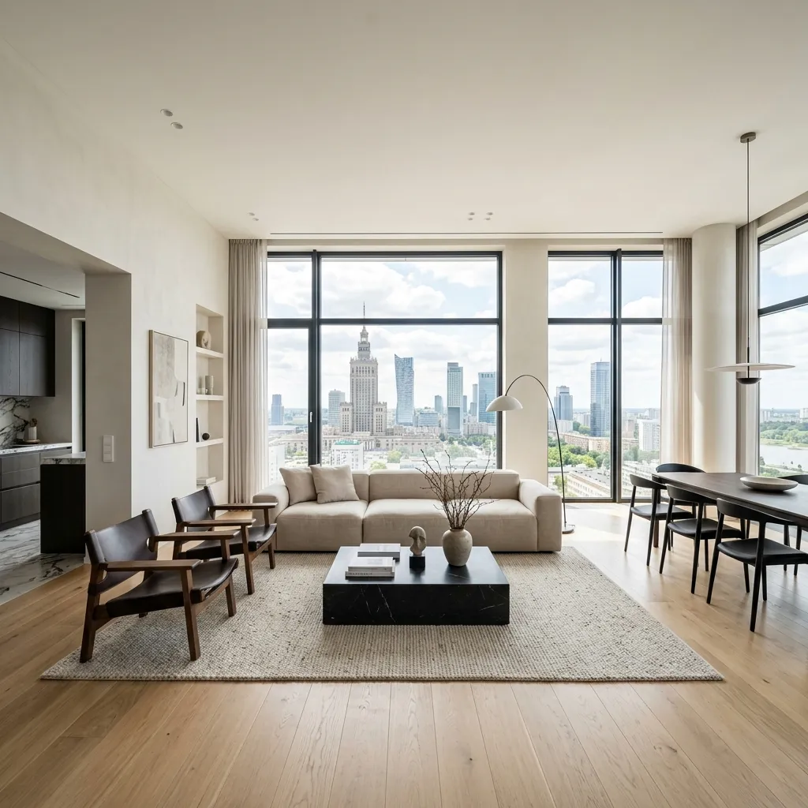

Блог StayX
Ваш путівник у світі нерухомості Варшави
Переїзд у Варшаву з України 2026: покроковий гід
Актуальний статус після 5 березня, карта CUKR, оренда, робота, NFZ, банк — все, що потрібно знати.
Документи для оренди квартири в Польщі 2026: повний перелік
Що потрібно орендарю-іноземцю, пакет Najem Okazjonalny, protokół, meldunek, US — з посиланнями на законодавство.
Оренда квартири у Варшаві 2026: Глобальна Енциклопедія
Все про те, як не просто знайти дах над головою, а побудувати комфортне життя у польській столиці без ризиків та переплат.
Ціни на оренду у Варшаві 2026: актуальні дані
Скільки коштує оренда квартири у Варшаві у 2026 році: порівняння по районах, типи житла, czynsz та найкращий час для пошуку.
Як орендувати квартиру іноземцю у Варшаві 2026
Повна покрокова інструкція про документи, Najem Okazjonalny, оренду без PESEL та локалі застемпчого.

Najem Okazjonalny vs стандартний договір 2026
Повний юридичний гід про типи договорів, права орендаря, ліміти та правила повернення кауції, виселення і PESEL.
Локації
Гіди по районах Варшави
Оренда в Мокотув (Mokotów)
Найбільша центральна дільниця Варшави — 30% зеленої площі, М1 наскрізь, від вілл Górny до офісного D...
Оренда в Центр (Śródmieście)
Найдорожчий і найбільш доступний для пішоходів район Варшави — Старе Місто, Powiśle, Nowy Świat, хма...
Оренда в Воля (Wola)
Польський Canary Wharf і найдинамічніший офісний хаб Варшави — зі зростаючою пропозицією квартир і н...
Оренда в Жолібож (Żoliborz)
Найменший і найпрестижніший район Варшави — інтелігентна атмосфера, кам'яниці 30-х, М1 і хронічний д...
Оренда в Вілянув (Wilanów)
Найпрестижніший адрес за межами центру: палац, дипломатичні резиденції, міжнародні школи та люкс-ЖК ...
Оренда в Урсинів (Ursynów)
Найкраща 'сімейна спальня' Варшави: 6 станцій М1, Ліс Кабацький, рейтингові школи і ціна на 20% нижч...
Оренда в Прага Південь (Praga Południe)
Різноманітний правобережний район із перлиною Saska Kępa, новим розвитком вздовж M2 і доступними цін...
Оренда в Білани (Bielany)
Зелений тихий північ Варшави з Лісом Белянським, М1 і доступними цінами — ідеальний для сімей, що лю...
Оренда в Охота (Ochota)
Тихий зелений район між центром і Мокотовом — Варшавський університет, академічна атмосфера і найкра...
Оренда в Прага Північ (Praga Północ)
Найбогемніший район Варшави — джентрифікація, лофти, арт-галереї, М2 і нижча ціна за правобережну ло...
Оренда в Бемово (Bemowo)
Нові станції М2 у 2026 трансформують Bemowo: нові ЖК, зростаючі ціни і найкраще співвідношення 'нова...
Оренда в Таргувек (Targówek)
Бюджетний правобережний район з потенціалом: старий фонд, нижча ціна і очікуване розширення М2....
Оренда в Бялоленка (Białołęka)
Наймасштабніший новобуд Варшави за найнижчою ціною — для тих, хто обирає між новою квартирою та тран...
Оренда в Влохи (Włochy)
3 хвилини від аеропорту Шопена, нові ЖК і залізничне сполучення — практичний вибір для тих, хто част...
Оренда в Урсус (Ursus)
Колишнє промислове місто з новими ЖК — найкраще ціна/якість серед бюджетних, з очікуваним М2....
Оренда в Вавер (Wawer)
Лісовий 'передмістя в місті' — соснові бори, річка Wisła і найнижча ціна за м² серед районів Варшави...
Оренда в Рембертув (Rembertów)
Найменший і найтихіший район Варшави — мінімальна орендна ставка в місті і тихий приватний характер....
Оренда в Весола (Wesoła)
Найменший район Варшави з сільським характером — абсолютна тиша і найнижчі ціни, майже без квартирно...